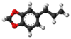

safrole

Definition: Safrole is an organic compound with the formula CH2O2C6H3CH2CH=CH2. It is a colorless oily liquid, although impure samples can appear yellow. A member of the phenylpropanoid family of natural products, it is found in sassafras plants, among others. Small amounts are found in a wide variety of plants, where it functions as a natural antifeedant. Ocotea pretiosa, which grows in Brazil, and Sassafras albidum, which grows in eastern North America, are the main natural sources of safrole. It has a characteristic "sweet-shop" aroma.
Source: Wikipedia
Wikipedia Page
Wikidata Page